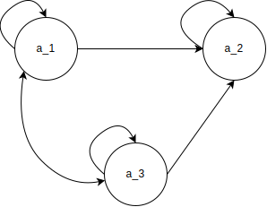
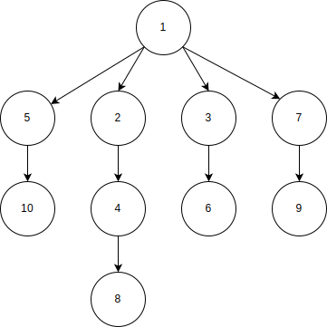
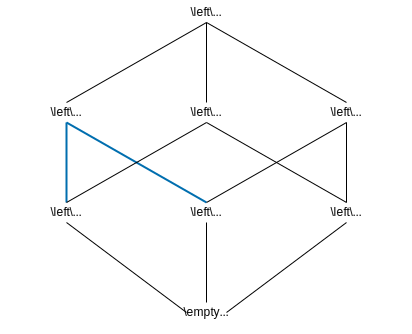

この記事は,
旧ブログ から移植された記事です. よって, その内容として,
旧ブログ に依存した文脈が含まれている可能性があります. 予めご了承下さい.
関係 (集合論) について復習.
一般的な関係
いま, 二つの要素の順序体を < a , b > \left\lt a, b\right\gt ⟨ a , b ⟩ < c , b > \left\lt c, b\right\gt ⟨ c , b ⟩
< a , b > = < c , d > : = a = c , b = d デカルト積 = 直積 = A × B : = { < a , b > ∣ a ∈ A , b ∈ B }
\begin{aligned}
\left\lt a,b\right\gt=\left\lt c,d\right\gt&:=&a=c, b=d\\
{\rm デカルト積} = {\rm 直積} = A\times B&:=&\left\{\left\lt a,b\right\gt\mid a\in A, b\in B\right\}
\end{aligned}
⟨ a , b ⟩ = ⟨ c , d ⟩ デカルト積 = 直積 = A × B := := a = c , b = d { ⟨ a , b ⟩ ∣ a ∈ A , b ∈ B }
このとき順序体の要素を n n n n n n
< a 1 , a 2 , ⋯ , a n > = < b 1 , b 2 , ⋯ , b n > : = ( a 1 = b 1 , a 2 = b 2 , ⋯ , a n = b n ) (1)
\left\lt a_1,a_2,\cdots,a_n\right\gt=\left\lt b_1,b_2,\cdots,b_n\right\gt:=(a_1=b_1,a_2=b_2,\cdots,a_n=b_n) \tag{1} ⟨ a 1 , a 2 , ⋯ , a n ⟩ = ⟨ b 1 , b 2 , ⋯ , b n ⟩ := ( a 1 = b 1 , a 2 = b 2 , ⋯ , a n = b n ) ( 1 ) デカルト積 = 直積 = A 1 × A 2 × ⋯ × A n = ∏ i = 1 n A i : = { < a 1 , a 2 , ⋯ , a n > ∣ a 1 ∈ A 1 , a 2 ∈ A 2 , ⋯ , a n ∈ A n } (2)
{\rm デカルト積} = {\rm直積} = A_1\times A_2\times\cdots\times A_n=\prod_{i=1}^{n}A_i:=\left\{\left\lt a_1,a_2,\cdots,a_n\right\gt\mid a_1\in A_1,a_2\in A_2,\cdots,a_n\in A_n\right\} \tag{2}
デカルト積 = 直積 = A 1 × A 2 × ⋯ × A n = i = 1 ∏ n A i := { ⟨ a 1 , a 2 , ⋯ , a n ⟩ ∣ a 1 ∈ A 1 , a 2 ∈ A 2 , ⋯ , a n ∈ A n } ( 2 )
なお ( 2 ) (2) ( 2 ) A n : = ( A 1 = A 2 = ⋯ = A n ) A^n:=(A_1=A_2=\cdots =A_n) A n := ( A 1 = A 2 = ⋯ = A n ) A A A B B B R ⊆ A × B R\subseteq A\times B R ⊆ A × B < a , b > ∈ R \left\lt a,b\right\gt\in R ⟨ a , b ⟩ ∈ R a a a b b b R R R R ( a , b ) R(a,b) R ( a , b ) a R b aRb a R b
R : = { < a , b > ∣ a ∈ A , b ∈ B , a R b } R:=\{\left\lt a,b\right\gt\mid a\in A,b\in B,aRb\} R := { ⟨ a , b ⟩ ∣ a ∈ A , b ∈ B , a R b }
( a , b ) ∉ R (a,b)\not\in R ( a , b ) ∈ R a a a b b b R R R R ‾ ( a , b ) \overline{R}(a,b) R ( a , b ) a R ‾ b a\overline{R}b a R b A = B A=B A = B R ⊆ ( A 2 = A × B ) R\subseteq (A^2=A\times B) R ⊆ ( A 2 = A × B ) A A A
例えば, 自然数の集合 N \mathbb{N} N 同値関係 “= = =
R : = { < n , n > ∣ n ∈ N } ⊆ N 2 R:=\{\left\lt n,n\right\gt\mid n\in \mathbb{N}\}\subseteq\mathbb{N}^2 R := { ⟨ n , n ⟩ ∣ n ∈ N } ⊆ N 2
と定義すると a , b ∈ N a,b\in \mathbb{N} a , b ∈ N a R = b ⇔ a = b a R_=b\Leftrightarrow a=b a R = b ⇔ a = b X = 1 , 2 , 3 X={1,2,3} X = 1 , 2 , 3 順序関係 R > ⊆ X 2 R_\gt\subseteq X^2 R > ⊆ X 2 > \gt > R > R_\gt R >
R > = { < 2 , 1 > , < 3 , 1 > , < 3 , 2 > } R_\gt=\{\left\lt 2,1\right\gt, \left\lt 3,1\right\gt, \left\lt 3,2\right\gt\} R > = { ⟨ 2 , 1 ⟩ , ⟨ 3 , 1 ⟩ , ⟨ 3 , 2 ⟩ }
となる. ここで, 逆関係を導入する. 関係 R R R B B B A A A
R − 1 : = { < b , a > ∣ a ∈ A , b ∈ B , a R b } R^{-1}:=\{\left\lt b,a\right\gt\mid a\in A, b\in B, aRb\} R − 1 := { ⟨ b , a ⟩ ∣ a ∈ A , b ∈ B , a R b }
と定義される. 従って, 例えば集合 X X X R > R_\gt R > R > − 1 = < 1 , 2 > , < 1 , 3 > , < 2 , 3 > R_\gt^{-1}={\left\lt 1,2\right\gt, \left\lt 1,3\right\gt, \left\lt 2,3\right\gt} R > − 1 = ⟨ 1 , 2 ⟩ , ⟨ 1 , 3 ⟩ , ⟨ 2 , 3 ⟩
二項関係は, より一般化することができる.
いま複数の集合の直積の部分集合, すなわち n n n R ⊆ ∏ i = 1 n A i R\subseteq\prod_{i=1}^{n}A_i R ⊆ ∏ i = 1 n A i < a 1 , a 2 , ⋯ , a n > ∈ R \left\lt a_1,a_2,\cdots,a_n\right\gt\in R ⟨ a 1 , a 2 , ⋯ , a n ⟩ ∈ R a 1 , a 2 , ⋯ , a n a_1,a_2,\cdots,a_n a 1 , a 2 , ⋯ , a n R R R R ( a 1 , a 2 , ⋯ , a n ) R(a_1,a_2,\cdots,a_n) R ( a 1 , a 2 , ⋯ , a n )
R : = { < a 1 , a 2 , ⋯ , a n > ∣ a 1 ∈ A 1 , a 2 ∈ A 2 , ⋯ , a n ∈ A n , R ( a 1 , a 2 , ⋯ , a n ) } ⊆ ∏ i = 1 n A i R:=\{\left\lt a_1,a_2,\cdots,a_n\right\gt\mid a_1\in A_1,a_2\in A_2,\cdots,a_n\in A_n, R(a_1,a_2,\cdots,a_n)\}\subseteq\prod_{i=1}^{n}A_i R := { ⟨ a 1 , a 2 , ⋯ , a n ⟩ ∣ a 1 ∈ A 1 , a 2 ∈ A 2 , ⋯ , a n ∈ A n , R ( a 1 , a 2 , ⋯ , a n )} ⊆ i = 1 ∏ n A i
また
< a 1 , a 2 , ⋯ , a n > ⊈ R \left\lt a_1,a_2,\cdots,a_n\right\gt\not\subseteq R ⟨ a 1 , a 2 , ⋯ , a n ⟩ ⊆ R ならば
a 1 , a 2 , ⋯ , a n a_1,a_2,\cdots,a_n a 1 , a 2 , ⋯ , a n は 関係
R R R にないといい,
R ‾ ( a 1 , a 2 , ⋯ , a n ) \overline{R}(a_1,a_2,\cdots,a_n) R ( a 1 , a 2 , ⋯ , a n ) と書く.
ここで, 本ブログ内で特に断りなく使われる一般的な関係に関する記号の表記, その意図について表明しておく.
任意の二項関係
≲ \lesssim ≲ の要素
< a , b > ∈ ≲ \left\lt a,b\right\gt\in\ \lesssim ⟨ a , b ⟩ ∈ ≲ に対し:
≺ : = < a , b > ∣ < a , b > ∈ ≲ , a ≠ b \prec\ :={\left\lt a,b \right\gt\mid \left\lt a, b\right\gt\in\ \lesssim, a\not=b} ≺ := ⟨ a , b ⟩ ∣ ⟨ a , b ⟩ ∈ ≲ , a = b
≪ : = < a , b > ∣ < a , c > ∉ ≲ かつ < c , b > ∉ ≲ \ll\ :={\left\lt a,b\right\gt\mid\left\lt a, c\right\gt\not\in\ \lesssim\ {\rm かつ}\ \left\lt c,b\right\gt\not\in\ \lesssim} ≪ := ⟨ a , b ⟩ ∣ ⟨ a , c ⟩ ∈ ≲ かつ ⟨ c , b ⟩ ∈ ≲
すなわち, x ≺ y x\prec y x ≺ y x x x y y y x ≪ y x\ll y x ≪ y x x x y y y
主な二項関係の規則
主な二項関係における規則を以下に定義する.
二項関係
R ⊆ A × B R\subseteq A\times B R ⊆ A × B , また
x ∈ A ∩ B x\in A\cap B x ∈ A ∩ B があって,
< x , x > ∈ R \left\lt x,x\right\gt\in R ⟨ x , x ⟩ ∈ R が存在するとき
R R R は反射律を満たすという.
例えば, 実数の集合 R \mathbb{R} R ∀ x ∈ R ^\forall x\in\mathbb{R} ∀ x ∈ R x ≤ x x\leq x x ≤ x ≤ \leq ≤ R \mathbb{R} R x < x x\lt x x < x < \lt < R \mathbb{R} R
二項関係
R ⊆ A × B R\subseteq A\times B R ⊆ A × B , また
x , y ∈ A ∩ B x,y\in A\cap B x , y ∈ A ∩ B があって,
< x , y > ∈ R \left\lt x,y\right\gt\in R ⟨ x , y ⟩ ∈ R ならば
< y , x > ∈ R \left\lt y,x\right\gt \in R ⟨ y , x ⟩ ∈ R が存在するとき,
R R R は対称律を満たすという.
例えば, 実数の集合 R \mathbb{R} R ∀ x , y ∈ R ^\forall x,y\in\mathbb{R} ∀ x , y ∈ R x = y x=y x = y y = x y=x y = x = = = R \mathbb{R} R x < y x\lt y x < y y < x y\lt x y < x < \lt < R \mathbb{R} R A A A R R R R R R A A A R = { < x , y > ∣ x , y ∈ A , x と y は相似 } ⊆ A 2 R=\{\left\lt x,y\right\gt\mid x,y\in A,x\ {\rm と}\ y\ {\rm は相似}\}\subseteq A^2 R = { ⟨ x , y ⟩ ∣ x , y ∈ A , x と y は相似 } ⊆ A 2 同値律 を満たす. 対称律の特徴を挙げると:
必ずしも x = y x=y x = y
真に大きい/小さい関係はあり得ない. R ≠ ≺ R\not=\ \prec R = ≺ R ≠ ≻ R\not=\ \succ R = ≻ x ≺ y ならば y ⊀ x x\prec y ならば y\not\prec x x ≺ y ならば y ≺ x
二項関係
R ⊆ A × B R\subseteq A\times B R ⊆ A × B , また
x , y ∈ A ∩ B x,y\in A\cap B x , y ∈ A ∩ B があって,
< x , y > ∈ R \left\lt x,y\right\gt\in R ⟨ x , y ⟩ ∈ R に対し
< y , x > ∈ R \left\lt y,x\right\gt\in R ⟨ y , x ⟩ ∈ R が存在するならば
x = y x=y x = y のとき,
R R R は反対称律を満たすという.
例えば, 集合 A = { a 1 , a 2 } A=\{a_1,a_2\} A = { a 1 , a 2 }
R = { < a 1 , a 1 > , < a 2 , a 2 > } R=\{\left\lt a_1,a_1\right\gt,\left\lt a_2,a_2\right\gt\} R = { ⟨ a 1 , a 1 ⟩ , ⟨ a 2 , a 2 ⟩ } R R R A A A 対称律 を満たし) 反対称律を満たす. なお, これは同値律 を満たす.R = { < a 1 , a 1 > , < a 1 , a 2 > } R=\{\left\lt a_1,a_1\right\gt,\left\lt a_1,a_2\right\gt\} R = { ⟨ a 1 , a 1 ⟩ , ⟨ a 1 , a 2 ⟩ } R R R A A A 対称律 を満たさないが) 反対称律を満たす.R = { < a 1 , a 2 > , < a 2 , a 1 > } R=\{\left\lt a_1,a_2\right\gt,\left\lt a_2,a_1\right\gt\} R = { ⟨ a 1 , a 2 ⟩ , ⟨ a 2 , a 1 ⟩ } R R R A A A 対称律 を満たすが) 反対称律を満たさない.
反対称律の特徴を挙げると:
対象的な二項関係が存在するとき, 必ず x = y x=y x = y
二項関係 R ⊆ A × B R\subseteq A\times B R ⊆ A × B x , y , z ∈ A ∩ B x,y,z\in A\cap B x , y , z ∈ A ∩ B < x , y > , < y , z > ∈ R \left\lt x,y\right\gt,\left\lt y,z\right\gt\in R ⟨ x , y ⟩ , ⟨ y , z ⟩ ∈ R < x , z > ∈ R \left\lt x,z\right\gt \in R ⟨ x , z ⟩ ∈ R R R R
例えば, 実数の集合 R \mathbb{R} R ∀ x , y , z ∈ R ^\forall x,y,z\in\mathbb{R} ∀ x , y , z ∈ R x ≤ y x\leq y x ≤ y y ≤ z y\leq z y ≤ z x ≤ z x\leq z x ≤ z ≤ \leq ≤ R \mathbb{R} R N \mathbb{N} N R = { < a , b > ∣ a , b , c ∈ N , a = b 2 かつ b = c 2 ならば a = c 2 を満たす } ⊆ N 2 R=\left\{\left\lt a, b\right\gt\mid a,b,c\in\mathbb{N}, a=b^2\ {\rm かつ}\ b=c^2\ {\rm ならば}\ a=c^2\ {\rm を満たす}\right\}\subseteq\mathbb{N}^2 R = { ⟨ a , b ⟩ ∣ a , b , c ∈ N , a = b 2 かつ b = c 2 ならば a = c 2 を満たす } ⊆ N 2 x , y ∈ A x,y\in A x , y ∈ A < x , y > ∈ R \left\lt x,y\right\gt\in R ⟨ x , y ⟩ ∈ R 16 = 4 2 16=4^2 16 = 4 2 4 = 2 2 4=2^2 4 = 2 2 16 ≠ 2 2 16\not=2^2 16 = 2 2 R R R N \mathbb{N} N
主な二項関係
二項関係 R R R A A A 反射律 , 推移律 を同時に満たすとき, R R R A A A
これは要するに, じゃんけんのような, 3 すくみ, すなわち グー ≲ \lesssim ≲ ≲ \lesssim ≲ ≲ \lesssim ≲ ≲ ⋯ \lesssim\cdots ≲ ⋯
前順序関係 R R R が集合
A A A 上で
対称律 を満たすとき,
R R R は
A A A 上で同値律を満たすという. また:
{ y ∈ X ∣ x R y } \{y\in X\mid xRy\} { y ∈ X ∣ x R y } x x x [ x ] R \left[x\right]_R [ x ] R [ x ] \left[x\right] [ x ] x x x [ x ] \left[x\right] [ x ]
集合 A A A R R R { [ a ] ∣ a ∈ A } \{[a]\mid a\in A\} {[ a ] ∣ a ∈ A } A / R A/R A / R
まず自明な例でいえば, = = = Z \mathbb{Z} Z R R R p ∈ Z p\in\mathbb{Z} p ∈ Z ≡ p \equiv_p ≡ p R R R Z \mathbb{Z} Z R = ≡ p = { < m , n > ∣ m , n ∈ Z , m と n は p で割ったときの余りが等しい } ⊆ Z 2 R=\equiv_p=\{\left\lt m,n\right\gt\mid m,n\in\mathbb{Z}, m {\rm と}\ n\ {\rm は}\ p\ {\rm で割ったときの余りが等しい}\}\subseteq\mathbb{Z}^2 R = ≡ p = { ⟨ m , n ⟩ ∣ m , n ∈ Z , m と n は p で割ったときの余りが等しい } ⊆ Z 2
反射律: 任意の m ∈ Z m\in\mathbb{Z} m ∈ Z m − m = 0 ⋅ p m-m=0\cdot p m − m = 0 ⋅ p m ≡ p m m\equiv_p m m ≡ p m
推移律: 任意の m , n , k ∈ Z m,n,k\in\mathbb{Z} m , n , k ∈ Z m ≡ p n m\equiv_p n m ≡ p n n ≡ p k n\equiv_p k n ≡ p k d , d ′ ∈ Z d,d'\in\mathbb{Z} d , d ′ ∈ Z m − n = d ⋅ p m-n=d\cdot p m − n = d ⋅ p n − k = d ′ ⋅ p n-k=d'\cdot p n − k = d ′ ⋅ p m − k = ( m − n ) + ( n − k ) = ( d + d ′ ) ⋅ p m-k=(m-n)+(n-k)=(d+d')\cdot p m − k = ( m − n ) + ( n − k ) = ( d + d ′ ) ⋅ p d + d ′ ∈ Z d+d'\in\mathbb{Z} d + d ′ ∈ Z m ≡ p k m\equiv_p k m ≡ p k
対称律: 任意の m , n ∈ Z m,n\in\mathbb{Z} m , n ∈ Z m ≡ p n m\equiv_p n m ≡ p n d ∈ Z d\in\mathbb{Z} d ∈ Z m − n = d ⋅ p m-n=d\cdot p m − n = d ⋅ p n − m = ( − d ) ⋅ p n-m=(-d)\cdot p n − m = ( − d ) ⋅ p − d ∈ Z -d\in\mathbb{Z} − d ∈ Z n ≡ p m n\equiv_p m n ≡ p m
と同値律を満たすことがわかる.
同値類や商集合の例として, 集合 X = 1 , 3 , 6 , 10 , 11 , 15 , 16 ⊆ N X={1,3,6,10,11,15,16}\subseteq \mathbb{N} X = 1 , 3 , 6 , 10 , 11 , 15 , 16 ⊆ N 1 1 1 5 5 5 1 1 1 [ 1 ] R = x ∣ 1 ≡ x ( m o d 5 ) \left[1\right]_R={x\mid 1\equiv x\pmod{5}} [ 1 ] R = x ∣ 1 ≡ x ( mod 5 ) [ 1 ] R = 1 , 6 , 11 , 16 \left[1\right]_R={1,6,11,16} [ 1 ] R = 1 , 6 , 11 , 16
であるので, X / R = 1 , 6 , 11 , 16 , 10 , 15 , 3 X/R={{1,6,11,16},{10,15},{3}} X / R = 1 , 6 , 11 , 16 , 10 , 15 , 3
前順序関係 R R R A A A 反対称律 を満たすとき, R R R A A A A A A
例えば, 集合族上の包含関係 ⊂ \subset ⊂
半順序集合が定義できれば, (最(大|小), 極(大|小))(要素|元)が定義できる.
半順序集合 A A A a 0 ∈ A a_0\in A a 0 ∈ A
∃ a ∈ A s . t . a 0 ≲ a ^\exists a\in A\ {\rm s.t.}\ a_0\lesssim a ∃ a ∈ A s.t. a 0 ≲ a a a a a 0 a_0 a 0 A A A max A \max A max A A A A A ⊆ C A\subseteq\mathbb{C} A ⊆ C max A \max A max A
∃ a ∈ A s . t . a ≲ a 0 ^\exists a\in A\ {\rm s.t.}\ a\lesssim a_0 ∃ a ∈ A s.t. a ≲ a 0 a a a a 0 a_0 a 0 A A A min A \min A min A A A A A ⊆ C A\subseteq\mathbb{C} A ⊆ C min A \min A min A
また a ∈ A a\in A a ∈ A
a ≳ a 0 a\gtrsim a_0 a ≳ a 0 a = a 0 a=a_0 a = a 0 a 0 a_0 a 0 A A A
a ≲ a 0 a\lesssim a_0 a ≲ a 0 a = a 0 a=a_0 a = a 0 a 0 a_0 a 0 A A A
A A A A A A 参考文献 1 , 参考文献 2 ).
例えば, 自然数全体の集合 N \mathbb{N} N 0 0 0 R \mathbb{R} R X = x 1 , x 2 , x 3 X={x_1,x_2,x_3} X = x 1 , x 2 , x 3 ( ℘ ( X ) − ∅ , X , ≤ ) (\wp(X)-{\emptyset,X},\leq) ( ℘ ( X ) − ∅ , X , ≤ ) x 1 , x 2 , x 1 , x 3 , x 2 , x 3 {x_1,x_2},{x_1,x_3},{x_2,x_3} x 1 , x 2 , x 1 , x 3 , x 2 , x 3 x 1 , x 2 , x 3 {x_1},{x_2},{x_3} x 1 , x 2 , x 3
半順序集合が定義できれば, (上|下)(界|限)が定義できる.
半順序集合
( ℘ ( X ) , ≤ ) (\wp(X),\leq) ( ℘ ( X ) , ≤ ) の空でない部分集合
A ≠ ∅ A\not =\emptyset A = ∅ の任意の要素
a ∈ A a\in A a ∈ A に対し,
∃ x ∈ X s . t . a ≲ x ^\exists x\in X\ {\rm s.t.}\ a\lesssim x ∃ x ∈ X s.t. a ≲ x x x x A A A x x x A A A
∃ x ∈ X s . t . x ≳ a ^\exists x\in X\ {\rm s.t.}\ x\gtrsim a ∃ x ∈ X s.t. x ≳ a x x x A A A x x x A A A
A A A B = { x ∈ X ∣ a ≲ x } B=\{x\in X | a\lesssim x\} B = { x ∈ X ∣ a ≲ x } min B \min B min B A A A sup A \sup A sup A
A A A B = { x ∈ X ∣ x ≲ a } B=\{x\in X | x\lesssim a\} B = { x ∈ X ∣ x ≲ a } max B \max B max B A A A inf A \inf A inf A
例えば, 集合 X = 1 , 1 2 , 1 3 , 1 4 , ⋯ X={1,\frac{1}{2},\frac{1}{3},\frac{1}{4},\cdots} X = 1 , 2 1 , 3 1 , 4 1 , ⋯ sup A = max A = 1 \sup A=\max A=1 sup A = max A = 1 inf A = 0 \inf A=0 inf A = 0 R R R
集合 A ≠ ∅ A\not=\emptyset A = ∅ 前順序関係 R R R ( A , R ) (A,R) ( A , R ) A A A X ⊆ A X\subseteq A X ⊆ A sup X ∈ A \sup X\in A sup X ∈ A A A A
有向集合は, 反対称律 を要請されていないので, 必ずしも半順序 集合とはならないことに注意. 例えば, 集合 A = { a 1 , a 2 , a 3 } A=\{a_1,a_2,a_3\} A = { a 1 , a 2 , a 3 } R = { < a 1 , a 1 > , < a 1 , a 2 > , < a 1 , a 3 > , < a 2 , a 2 > , < a 3 , a 3 > , < a 3 , a 1 > , < a 3 , a 2 > } R=\{\left\lt a_1,a_1\right\gt,\left\lt a_1,a_2\right\gt,\left\lt a_1,a_3\right\gt, \left\lt a_2,a_2\right\gt,\left\lt a_3,a_3\right\gt,\left\lt a_3,a_1\right\gt,\left\lt a_3,a_2\right\gt\} R = { ⟨ a 1 , a 1 ⟩ , ⟨ a 1 , a 2 ⟩ , ⟨ a 1 , a 3 ⟩ , ⟨ a 2 , a 2 ⟩ , ⟨ a 3 , a 3 ⟩ , ⟨ a 3 , a 1 ⟩ , ⟨ a 3 , a 2 ⟩ } < a 1 , a 3 > , < a 3 , a 1 > ∈ R \left\lt a_1,a_3\right\gt,\left\lt a_3,a_1\right\gt\in R ⟨ a 1 , a 3 ⟩ , ⟨ a 3 , a 1 ⟩ ∈ R a 1 = a 3 a_1=a_3 a 1 = a 3

図 1: 集合 A = { a 1 , a 2 , a 3 } A=\{a_1,a_2,a_3\} A = { a 1 , a 2 , a 3 } R = { < a 1 , a 1 > , < a 1 , a 2 > , < a 1 , a 3 > , < a 2 , a 2 > , < a 3 , a 3 > , < a 3 , a 1 > , < a 3 , a 2 > } R=\{\left\lt a_1,a_1\right\gt, \left\lt a_1,a_2\right\gt,\left\lt a_1,a_3\right\gt, \left\lt a_2,a_2\right\gt,\left\lt a_3,a_3\right\gt, \left\lt a_3,a_1\right\gt,\left\lt a_3,a_2\right\gt\} R = { ⟨ a 1 , a 1 ⟩ , ⟨ a 1 , a 2 ⟩ , ⟨ a 1 , a 3 ⟩ , ⟨ a 2 , a 2 ⟩ , ⟨ a 3 , a 3 ⟩ , ⟨ a 3 , a 1 ⟩ , ⟨ a 3 , a 2 ⟩ }
半順序関係 R R R A A A R R R A A A
任意の全順序集合の有限部分集合は明らかに最大要素がただ 1 つ存在するため有界であるので, 有向集合である. その他, 例えば, 大小関係 ≤ \leq ≤ N \mathbb{N} N
半順序関係 R R R A A A ( A , R ) \left(A,R\right) ( A , R ) { < a 0 , a 1 > , < a 1 , a 2 > , ⋯ } ⊆ R \left\{\left\lt a_0,a_1\right\gt,\left\lt a_1,a_2\right\gt,\cdots\right\}\subseteq R { ⟨ a 0 , a 1 ⟩ , ⟨ a 1 , a 2 ⟩ , ⋯ } ⊆ R A A A a 0 R a 1 R a 2 R ⋯ a_0\ R\ a_1\ R\ a_2\ R \cdots a 0 R a 1 R a 2 R ⋯ ω \omega ω < a 0 , a 1 , a 2 , ⋯ > \left\lt a_0,a_1,a_2,\cdots\right\gt ⟨ a 0 , a 1 , a 2 , ⋯ ⟩ i ≤ j ⇒ < a i , a j > ∈ R i\leq j\Rightarrow \left\lt a_i,a_j\right\gt\in R i ≤ j ⇒ ⟨ a i , a j ⟩ ∈ R
ω \omega ω R R R ω \omega ω cpo や ω \omega ω cpo ということがある.
上記で定義した二項関係と集合間の射について定義する.
半順序関係 R 0 , R 1 ⊆ R R_0,R_1\subseteq R R 0 , R 1 ⊆ R A 0 , A 1 ⊆ A A_0,A_1\subseteq A A 0 , A 1 ⊆ A ( A 0 , R 0 ) , ( A 1 , R 1 ) \left(A_0,R_0\right),\left(A_1,R_1\right) ( A 0 , R 0 ) , ( A 1 , R 1 ) f : A 0 → A 1 f:A_0\rightarrow A_1 f : A 0 → A 1 f f f ∀ a 0 , a 1 ∈ A 0 . < a 0 , a 1 > ∈ R 0 ⇒ < f ( a 0 ) , f ( a 1 ) > ∈ R 1 ^\forall a_0,a_1\in A_0.\left\lt a_0,a_1\right\gt\in R_0\Rightarrow \left\lt f(a_0),f(a_1)\right\gt\in R_1 ∀ a 0 , a 1 ∈ A 0 . ⟨ a 0 , a 1 ⟩ ∈ R 0 ⇒ ⟨ f ( a 0 ) , f ( a 1 ) ⟩ ∈ R 1
ハッセ図
主に半順序集合の図示の方法としてよく使われるハッセ図について, 以下にいくつかの例を示す.
まずは, 入門書でよく見る例題に習い, 自然数全体の集合 N \mathbb{N} N m , n ∈ N m,n\in\mathbb{N} m , n ∈ N m m m n n n m ∣ n m\mid n m ∣ n ∣ \mid ∣ N \mathbb{N} N
さて, このような一つの有限半順序集合上の関係は, 図 1 と同様にして, 以下のように有向グラフにより表現できる. いま, 集合 X = { n ∣ n ∈ N , 1 ≤ n ≤ 10 } X=\{n\mid n\in\mathbb{N}, 1\leq n\leq 10\} X = { n ∣ n ∈ N , 1 ≤ n ≤ 10 } ≪ \ll ≪ x ∣ y x\mid y x ∣ y y y y x x x x ≲ y x\lesssim y x ≲ y

図2: 整除の下で ≪ \ll ≪ X X X
これをハッセ図では次のように書く.
図3: 整除の下で ≪ \ll ≪ X X X
有向グラフが x → y x\to y x → y y y y x x x 1 1 1 10 , 8 , 6 , 9 10,8,6,9 10 , 8 , 6 , 9 10 , 8 , 6 , 9 10,8,6,9 10 , 8 , 6 , 9
別の例として, X = { a , b , c , d } X=\left\{a, b, c, d\right\} X = { a , b , c , d } a ≲ c , a ≲ d , b ≲ c , b ≲ d a\lesssim c, a\lesssim d, b\lesssim c, b\lesssim d a ≲ c , a ≲ d , b ≲ c , b ≲ d ( X , ≲ ) (X,\lesssim) ( X , ≲ )
図4: 半順序関係 a ≲ c , a ≲ d , b ≲ c , b ≲ d a\lesssim c, a\lesssim d, b\lesssim c, b\lesssim d a ≲ c , a ≲ d , b ≲ c , b ≲ d
このときの下界は a , b a,b a , b c , d c,d c , d a , b a,b a , b c , d c,d c , d
最後にもう 1 つ, 半順序集合 ( ℘ ( x 1 , x 2 , x 3 ) , ⊂ ) (\wp({x_1,x_2,x_3}), \subset) ( ℘ ( x 1 , x 2 , x 3 ) , ⊂ ) ⊂ \subset ⊂ ∅ ⊂ x 1 , x 1 ⊂ x 1 , x 2 , ⋯ \emptyset\subset{x_1},{x_1}\subset{x_1,x_2},\cdots ∅ ⊂ x 1 , x 1 ⊂ x 1 , x 2 , ⋯
図5: 半順序集合 ( ℘ ( x 1 , x 2 , x 3 ) , ⊂ ) (\wp({x_1,x_2,x_3}), \subset) ( ℘ ( x 1 , x 2 , x 3 ) , ⊂ )
このときの最小元および下限は ∅ \emptyset ∅ x 1 , x 2 , x 3 {x_1,x_2,x_3} x 1 , x 2 , x 3
半順序集合の拡張
半順序関係 R R R 有向集合 A A A ( A , R ) (A, R) ( A , R ) A A A
半順序 集合 A A A X ⊆ A X\subseteq A X ⊆ A X X X sup X ∈ A \sup X\in A sup X ∈ A A A A
いま X ⊆ A X\subseteq A X ⊆ A A A A X X X A A A 図 3 , 図 4 , 図 5 で示される集合は dcpo 集合である (上記の定義のニュアンスとして, たまに任意の部分集合が有向部分集合でなければならないと捉えられる場合があるが, そうではなく, あくまで有向部分集合として構成可能な部分集合のうちという意味合いである). 教科書によっては, dcpo を単に完備半順序, また cpo ということがある. また, すべての ω \omega ω ω \omega ω ω \omega ω ω \omega ω
dcpo 集合 D , D ′ D,D' D , D ′ 単調関数 f : D → D ′ f:D\rightarrow D' f : D → D ′ ∀ A ⊆ D . f ( sup A ) = sup { f ( a ) ∣ a ∈ A } ^\forall A\subseteq D.f(\sup A)=\sup\left\{f(a)\mid a\in A\right\} ∀ A ⊆ D . f ( sup A ) = sup { f ( a ) ∣ a ∈ A } A A A 有向集合 .
dcpo R R R D D D ( D , R ) (D,R) ( D , R ) x ∈ D x\in D x ∈ D ∀ A ⊆ D . < x , sup A > ∈ R ⇒ ∃ y ∈ A . < x , y > ∈ R (1) ^\forall A\subseteq D. \left\lt x,\sup A\right\gt\in R\Rightarrow ^\exists y\in A.\left\lt x,y\right\gt \in R\tag{\htmlId{compact}{1}} ∀ A ⊆ D . ⟨ x , sup A ⟩ ∈ R ⇒ ∃ y ∈ A . ⟨ x , y ⟩ ∈ R ( 1 ) A A A 1 \href{#compact}{1} 1 K ( D ) : = { x ∣ 条件式 1 を満たす x ∈ D } \mathrm{K}(D):=\left\{x\mid\text{条件式}\ \href{#compact}{1}\ \text{を満たす} x\in D\right\} K ( D ) := { x ∣ 条件式 1 を満たす x ∈ D }
dcpo R R R D D D ( D , R ) (D,R) ( D , R ) D D D ∀ x ∈ D , A = { a ∈ K ( D ) ∣ < a , x > ∈ R } . A は有向集合 ∧ sup A = x ^\forall x\in D,A=\left\{a\in\mathrm{K}(D)\mid \left\lt a,x\right\gt\in R\right\}.A\text{ は有向集合}\land\sup A=x ∀ x ∈ D , A = { a ∈ K ( D ) ∣ ⟨ a , x ⟩ ∈ R } . A は有向集合 ∧ sup A = x
dcpo R R R D D D ( D , R ) (D,R) ( D , R ) A ⊆ K ( D ) A\subseteq\mathrm{K}(D) A ⊆ K ( D ) D D D ∀ x ∈ D , A = { a ∈ A ∣ < a , x > ∈ R } . A は有向集合 ∧ sup A = x ^\forall x\in D,A=\left\{a\in A\mid \left\lt a,x\right\gt\in R\right\}.A\text{ は有向集合}\land\sup A=x ∀ x ∈ D , A = { a ∈ A ∣ ⟨ a , x ⟩ ∈ R } . A は有向集合 ∧ sup A = x
ここで A A A D D D D D D K ( D ) = A \mathrm{K}(D)=A K ( D ) = A
次の 2 つの条件を満たす
半順序 集合
A A A を
点付き 有向完備半順序集合 cppo (pointed directed-complete partial order) という.
A A A dcpo 集合
A A A
以下にいくつかの例を示す.
任意の集合 A A A A A A P ( A ) = { S ∣ S ⊆ A } \mathcal{P}(A)=\left\{S\mid S\subseteq A\right\} P ( A ) = { S ∣ S ⊆ A } ⊆ \subseteq ⊆ ( P ( A ) , ⊆ ) \left(\mathcal{P}(A),\subseteq\right) ( P ( A ) , ⊆ ) cppo となる (さらに, すべての P ⊆ P ( A ) P\subseteq\mathcal{P}(A) P ⊆ P ( A ) P P P sup P ∈ P ( A ) \sup P\in\mathcal{P}(A) sup P ∈ P ( A ) P ( A ) \mathcal{P}(A) P ( A ) 完備束 でもある)
図 3 および 図 5 で示される集合は dcpo でありかつ最小元をもつため cppo だが, 図 4 は最小元をもたないため, cppo ではない( N , ≤ ) (\mathbb{N}, \leq) ( N , ≤ ) N ⊆ N \mathbb{N}\subseteq\mathbb{N} N ⊆ N cppo ではない. ここで, ∞ = max N \infty = \max \mathbb{N} ∞ = max N ( N ∪ { ∞ } , ≤ ) (\mathbb{N}\cup\{\infty\},\leq) ( N ∪ { ∞ } , ≤ ) cppo になる
教科書によっては, cppo を単に完備半順序, また cpo ということがある.
cppo 集合 D , D ′ D,D' D , D ′ f : D → D ′ f:D\rightarrow D' f : D → D ′ f ( min D ) = min D ∈ D ′ f(\min D)=\min D\in D' f ( min D ) = min D ∈ D ′ f f f
二項演算子
∧ , ∨ \land,\lor ∧ , ∨ のもとで閉じている空でない集合
L L L の任意の要素
x , y , z ∈ L x,y,z\in L x , y , z ∈ L に対して, 次の三つの束の公理
可換律:x ∧ y = y ∧ x , x ∨ y = y ∨ x x\land y=y\land x, x\lor y=y\lor x x ∧ y = y ∧ x , x ∨ y = y ∨ x
結合律:( x ∧ y ) ∧ z = x ∧ ( y ∧ z ) , ( x ∨ y ) ∨ z = x ∨ ( y ∨ z ) (x\land y)\land z=x\land(y\land z), (x\lor y)\lor z=x\lor(y\lor z) ( x ∧ y ) ∧ z = x ∧ ( y ∧ z ) , ( x ∨ y ) ∨ z = x ∨ ( y ∨ z )
吸収律:x ∧ ( x ∨ y ) = x , x ∨ ( x ∧ y ) = x x\land(x\lor y)=x,x\lor(x\land y)=x x ∧ ( x ∨ y ) = x , x ∨ ( x ∧ y ) = x
を満たすとき, 集合 L L L ( L , ∧ , ∨ ) (L,\land,\lor) ( L , ∧ , ∨ ) ∨ , ∧ \lor,\land ∨ , ∧ S S S a , b a,b a , b sup { a , b } : = { x ∣ ∀ m ∈ M ( x ≲ m ) , x ∈ M } , M = { m ∣ a , b ≲ m , m ∈ S } \sup\left\{a,b\right\}:=\left\{x\mid ^\forall m\in M(x\lesssim m),x\in M\right\},
M=\left\{m\mid a,b\lesssim m,m\in S\right\} sup { a , b } := { x ∣ ∀ m ∈ M ( x ≲ m ) , x ∈ M } , M = { m ∣ a , b ≲ m , m ∈ S } inf { a , b } : = { x ∣ ∀ m ∈ M ( x ≳ m ) , x ∈ M } , M = { m ∣ a , b ≳ m , m ∈ S } \inf\{a,b\}:=\left\{x\mid ^\forall m\in M(x\gtrsim m),x\in M\right\},
M=\left\{m\mid a,b\gtrsim m,m\in S\right\} inf { a , b } := { x ∣ ∀ m ∈ M ( x ≳ m ) , x ∈ M } , M = { m ∣ a , b ≳ m , m ∈ S } sup { a , b } , inf { a , b } \sup\left\{a,b\right\},\inf\left\{a,b\right\} sup { a , b } , inf { a , b } a ∨ b , a ∧ b a\lor b,a\land b a ∨ b , a ∧ b x , y x, y x , y
束 L L L L L L
束の部分集合が束であるとき, その束をとくに部分束
束 L L L ∀ x , y ∈ L ^\forall x,y\in L ∀ x , y ∈ L f ( x ∧ y ) = f ( x ) ∧ f ( y ) , f ( x ∨ y ) = f ( x ) ∨ f ( y ) f(x\land y)=f(x)\land f(y), f(x\lor y)=f(x)\lor f(y) f ( x ∧ y ) = f ( x ) ∧ f ( y ) , f ( x ∨ y ) = f ( x ) ∨ f ( y ) f : L 1 → L 2 f: L_1\to L_2 f : L 1 → L 2 L 1 , L 2 L_1,L_2 L 1 , L 2
束の任意の要素 x , y , z x,y,z x , y , z x ∨ ( y ∧ z ) = ( x ∨ y ) ∧ ( x ∨ z ) , x ∧ ( y ∨ z ) = ( x ∧ y ) ∨ ( x ∧ z ) x\lor(y\land z)=(x\lor y)\land(x\lor z), x\land(y\lor z)=(x\land y)\lor(x\land z) x ∨ ( y ∧ z ) = ( x ∨ y ) ∧ ( x ∨ z ) , x ∧ ( y ∨ z ) = ( x ∧ y ) ∨ ( x ∧ z )
という.
例えば, 先の例 でも挙げた ( ℘ ( x 1 , x 2 , x 3 ) , ⊂ ) (\wp({x_1,x_2,x_3}), \subset) ( ℘ ( x 1 , x 2 , x 3 ) , ⊂ ) x 1 , x 2 {x_1},{x_2} x 1 , x 2 sup x 1 , x 2 \sup{{x_1},{x_2}} sup x 1 , x 2 x 1 ⊂ x 1 , x 2 , x 2 ⊂ x 1 , x 2 {x_1}\subset{x_1,x_2},{x_2}\subset{x_1,x_2} x 1 ⊂ x 1 , x 2 , x 2 ⊂ x 1 , x 2 sup x 1 , x 2 = x 1 , x 2 \sup{{x_1},{x_2}}={x_1,x_2} sup x 1 , x 2 = x 1 , x 2

図6: 半順序集合 ( ℘ ( x 1 , x 2 , x 3 ) , ⊂ ) (\wp({x_1,x_2,x_3}), \subset) ( ℘ ( x 1 , x 2 , x 3 ) , ⊂ ) sup { { x 1 } , { x 2 } } \sup\left\{\left\{x_1\right\},\left\{x_2\right\}\right\} sup { { x 1 } , { x 2 } }
ハッセ図で考えると, 上方向に辺を辿っていったとき, 各ノードそれぞれが順序比較可能でありかつ最小であるものが上限となる. 例えば
sup { { x 1 , x 2 } , { x 2 , x 3 } } = { x 1 , x 2 , x 3 } sup { { x 1 } , { x 2 , x 3 } } = { x 1 , x 2 , x 3 } sup { ∅ , { x 1 , x 2 } } = { x 1 , x 2 } sup { ∅ , ∅ } = ∅ (9)
\begin{aligned}
\sup\left\{\left\{x_1,x_2\right\},\left\{x_2,x_3\right\}\right\}&=&\left\{x_1,x_2,x_3\right\}\\
\sup\left\{\left\{x_1\right\},\left\{x_2,x_3\right\}\right\}&=&\left\{x_1,x_2,x_3\right\}\\
\sup\left\{\emptyset,\left\{x_1,x_2\right\}\right\}&=&\left\{x_1,x_2\right\}\\
\sup\left\{\emptyset,\emptyset\right\}&=&\emptyset\tag{9}
\end{aligned}
sup { { x 1 , x 2 } , { x 2 , x 3 } } sup { { x 1 } , { x 2 , x 3 } } sup { ∅ , { x 1 , x 2 } } sup { ∅ , ∅ } = = = = { x 1 , x 2 , x 3 } { x 1 , x 2 , x 3 } { x 1 , x 2 } ∅ ( 9 )
となる. 最後の ( 9 ) (9) ( 9 ) L L L x ∈ L x\in L x ∈ L sup x , x = x \sup{x,x}=x sup x , x = x
x , y ∈ L , z = ( x ∨ y ) x,y\in L,z=(x\lor y) x , y ∈ L , z = ( x ∨ y )
sup { x , x } ↔ x ∨ x = x ∨ ( x ∧ ( x ∨ y ) ) ( ∵ 公理 3 : 吸収律 ) = x ∨ ( x ∧ z ) ( ∵ 公理 3 : 吸収律 ) = x ( ∵ 公理 3 : 吸収律 )
\begin{aligned}
\sup\left\{x,x\right\}\leftrightarrow x\lor x&=&x\lor(x\land(x\lor y)) & (\because {\rm \href{#lattice3}{公理3}: 吸収律})\\
&=&x\lor (x\land z)&(\because {\rm \href{#lattice3}{公理3}: 吸収律})\\
&=&x&(\because {\rm \href{#lattice3}{公理3}: 吸収律})
\end{aligned}
sup { x , x } ↔ x ∨ x = = = x ∨ ( x ∧ ( x ∨ y )) x ∨ ( x ∧ z ) x ( ∵ 公理 3 : 吸収律 ) ( ∵ 公理 3 : 吸収律 ) ( ∵ 公理 3 : 吸収律 )
ここで一度, 上の定理に加えて考察できるいくつかの事項を羅列する.
下限は, 上限の逆順序で定義されるものである. 例えば, inf x 1 , x 2 = ∅ \inf{{x_1},{x_2}}=\emptyset inf x 1 , x 2 = ∅
完備束 ( L , ∧ , ∨ ) (L,\land,\lor) ( L , ∧ , ∨ ) S ⊆ L S\subseteq L S ⊆ L S = ∅ S=\emptyset S = ∅ sup S = min L \sup S=\min L sup S = min L S = L S=L S = L sup S = max D \sup S=\max D sup S = max D
いま, 分配束 L L L 1 , 0 1,0 1 , 0 L L L x , y ∈ L x,y\in L x , y ∈ L x ∨ y = 1 , x ∧ y = 0 x\lor y=1,x\land y=0 x ∨ y = 1 , x ∧ y = 0 x x x y y y x ′ x' x ′ x ˉ \bar{x} x ˉ 1 , 0 1,0 1 , 0 L L L
x , y ∈ L x,y\in L x , y ∈ L a ∈ L a\in L a ∈ L
x = x ∨ 0 = x ∨ ( a ∧ y ) = ( x ∨ a ) ∧ ( x ∨ y ) = 1 ∧ ( x ∨ y ) = x ∧ y
\begin{aligned}
x&=&x\lor 0\\
&=&x\lor(a\land y)\\
&=&(x\lor a)\land(x\lor y)\\
&=&1\land(x\lor y)\\
&=&x\land y
\end{aligned}
x = = = = = x ∨ 0 x ∨ ( a ∧ y ) ( x ∨ a ) ∧ ( x ∨ y ) 1 ∧ ( x ∨ y ) x ∧ y
同様に y = x ∨ y y=x\lor y y = x ∨ y x = y x=y x = y
束 L L L L L L ブール代数 である.
参考文献
Extremum - Wolfram MathWorld 2019/3/15 アクセス.Maximum and minimum of a function - Encyclopedia of Mathematics 2019/3/15 アクセス.赤間世紀, 長田康敬, 玉城史朗 (2006)『情報数学入門 』共立出版. ISBN-13: 978-4320018143
“Directed complete partial orders”, http://math.chapman.edu/~jipsen/structures/doku.php/directed_complete_partial_orders 2020/7/9 アクセス.
S. Abramsky, A. Jung: Domain theory. In S. Abramsky, D. M. Gabbay, T. S. E. Maibaum, editors (1994)『Handbook of Logic in Computer Science, vol. III』, Oxford University Press.